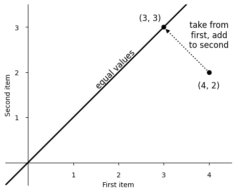
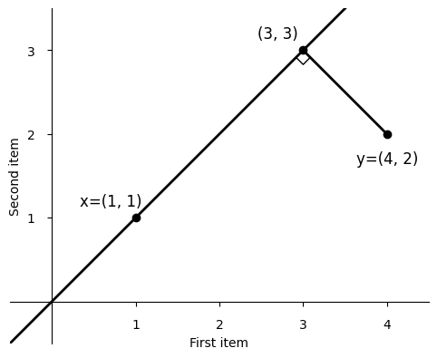
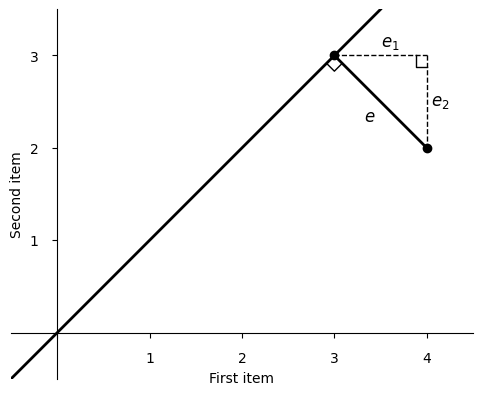
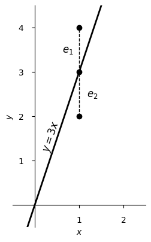
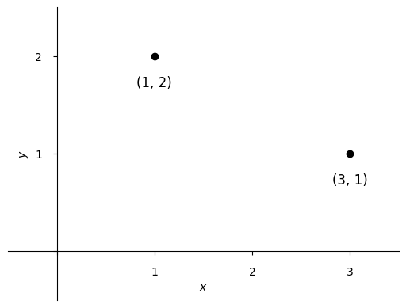
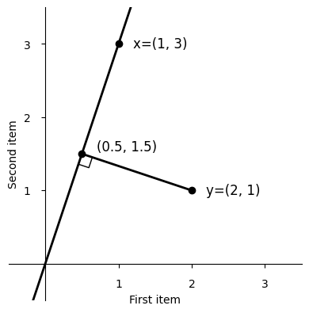
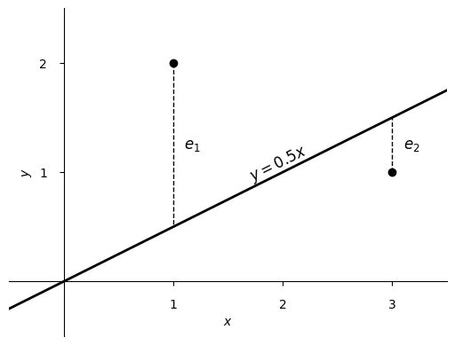

Regression, from the mean
Tuesday September 1, 2026
Starting from averaging, you get all of multiple regression by least squares.
If you are given two numbers and asked to report a single number to describe them both, it's natural to choose the number exactly in between.
To get the number in between, you might subtract from the larger number while at the same time adding the same amount to the smaller number, until the numbers are equal.
You could imagine this physically as sliding along a number line from each number to their midpoint, or moving blocks until you have stacks of equal height.
To average four and two, you take one from four and add it to two, producing threes. You can picture this as starting from the point (4, 2) and finding the nearest point with equal values, by decreasing the first value while increasing the second, arriving at (3, 3).

The direction you moved is perpendicular to the line of equal values, which means you found the projection of (4, 2) onto that line. We can calculate that projection using any non-zero point on the line. What multiple of (1, 1), for example, is nearest (4, 2)?

With \( y = (4, 2) \) and \( x = (1, 1) \), the projection is \( x \) times a multiplier \( b \). Writing the calculation in the “normal equation” style, with column vectors,
\[ b = (x^Tx)^{-1}x^Ty = (1 \cdot 1 + 1 \cdot 1)^{-1} (1 \cdot 4 + 1 \cdot 2) = 3 \]
so we can find (3, 3) as \( 3x \)—and with \( x \) as ones, \( b \) also tells us the mean directly.
Our path to the line of equal values is the shortest such path from (4, 2). Calling it \( e \), notice that \( e \) is the hypotenuse of the right triangle with sides \( e_1 \) and \( e_2 \), which are the adjustments we made to the original numbers. By the Pythagorean theorem, \( e^2 = e_1^2 + e_2^2 \), so by minimizing \( e \) we have minimized the sum of the adjustments' squares. This is often called least squares.

Changing from item axes to dimension axes, we can plot \( y \) against \( x \). You can see that the mean is indeed exactly between the two numbers. The line of equal values has no presence here, except that the \( x \) we chose from it controls how far to the right we draw our points.

The line shown visualizes \( y = bx \). We had only been thinking of the case when \( x = 1 \), but the line extends, going through the origin.
The current view can also be where we start. We could have any \( (x, y) \) points we like.

Going back to item axes, the situation is just as when we were averaging, but now the line we're moving to isn't a line of equal values, and so the minimizing perpendicular also has a different slope.

We still calculate this \( b \) as we did before.
\[ b = (x^Tx)^{-1}x^Ty = (1 \cdot 1 + 3 \cdot 3)^{-1} (1 \cdot 2 + 3 \cdot 1) = \tfrac{1}{2} \]
We've fit a line through the origin that minimizes the squared errors between our line and the original items.

You can add more items (more points) and calculate as before, but that makes too many item axes to draw in two dimensions. (If you just wanted to average more than two items, you can do it, now with multiple justifications for adding up the numbers and dividing by how many you added!)
You can add more dimensions and calculate as before (with \( X \) a matrix and \(b \) a vector now) but the visualization of the solution can be harder to draw, and you'll have too many dimension axes to show in two dimensions.
Indeed, you can have most any number of items and dimensions and in general the “averaging machine” we've developed will handle it. Pretty great, for something that started by just shifting boxes around!